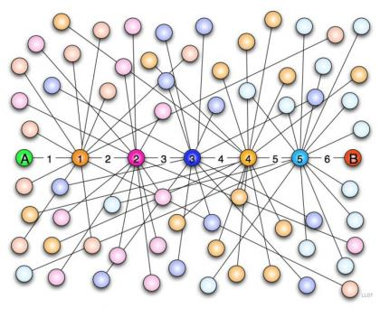
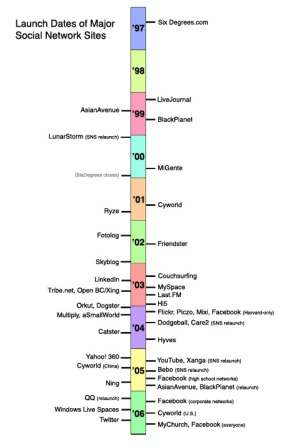
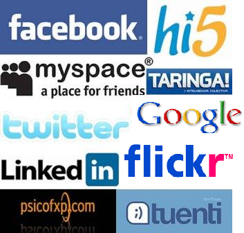

Actividad
Una red social es una forma de interacción social basada en el intercambio dinámico entre personas, grupos e instituciones. Son sistemas abiertos y en permanente construcción en los que se forman grupos en torno a un tema común.
|
"La leyenda urbana dice que todos estamos relacionados con cualquier otra persona del planeta por no más de seis grados de separación ..."
Este es el encabezamiento de una noticia publicada en CadenaSer.com y puedes encontrar el texto completo en el siguiente enlace:
|

|
|
Img 15. Teoría de los seis grados de separación Imagen obtenida en Geociencia con licencia Creative Commons |
|
Un poco de historia...
El primer sitio de redes sociales reconocido fue SixDegrees.com en 1997. Permitía a los usuarios crear perfiles, lista de amigos y amigos de sus amigos. De 1997 a 2001, aparecieron otros sitios que permitían a los usuarios crear relaciones personales y profesionales e identificar amigos en sus redes sin pedir su aprobación. Ryze.com se inició en 2001 para crear redes empresariales y profesionales.
Desde entonces, surgen los primeros sitios que fomentan estas redes de amistad y es en 2003 cuándo se hacen populares con la aparición de sitios tales como Friendster, Tribe y Myspace. A partir de ese momento, las empresas ven un negocio creciente en las redes sociales y empiezan a lanzar las suyas propias: Google lanza en enero de 2004 Orkut y en 2005 aparecen Yahoo 360º y otros.
Desde entonces diversas redes se han creado, desapareciendo algunas y permaneciendo otras. Los principales competidores en 2020 a nivel mundial son: Instagram, Facebook, Twitter y LinkedIn.
A medida que se han ido convirtiendo en un negocio, también han surgido intereses comerciales, llegando incluso a registrarse una patente sobre redes sociales en la Oficina de Patentes de Estados Unidos.
|
 | |
|
Img 16. Fecha de lanzamiento de redes sociales
Imagen obtenida en Wikipedia (art. red social)
|
||
| Tipos de redes sociales |
Aunque existen diferentes clasificaciones de las redes sociales y cada día aparecen más, la clasificación general más habitual es la basada en la función de la red social.
|
De socialización |
Son las llamadas comunidades virtuales o comunidades on-line y se basan en compartir diferentes tipos de experiencias entre personas, como:
|
 Img 17. Logos de redes sociales Imagen de producción propia |
|
Profesionales
|
Basadas en el intercambio de informaciones y perfiles profesionales. Algunas de ellas son: LinkedIn, Networking Activo, Viadeo, Xing y otras muchas. | |
| De relación | Se utilizan para buscar y comunicarse con amigos o contactos, es decir, se sostienen en relaciones que no necesariamente tienen un soporte on-line, como Festuc, Facebook, Tuenti, Hi5 o la reciente y en auge Google+. | |
| De compra | Han dado lugar a un nuevo término, Shopping 2.0, donde se pueden consultar y comparar productos. Algunas de ellas son: Kadboodle o SaleShout. |